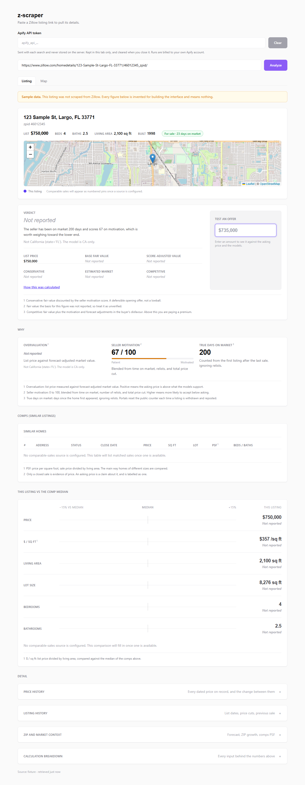

Vivian K. Nguyen
I build data tools that tell the truth about their own gaps.
AI engineering intern at Kool Quarters, building a listing-analysis tool that says “not reported” when the data cannot back a number. Before that, a data science internship at IDX Exchange predicting what California homes actually sell for. Learning to ship software and defend design choices to stakeholders.
Selected work
The four things I would show first. Two of them fold out into a live demo or a screenshot.
-
z-scraper
Paste a Zillow listing link and get a verdict on the deal with the reasoning laid out: price cuts, true days on market, and what the listing's history signals. Numbers the models cannot yet stand behind say “not reported” and give the reason, instead of a confident guess.
Unreleased, so there is no public code or live version to link yet.
Show a screenshot of the development build

The development build running on its built-in sample listing, so every figure is invented data. Numbers the models cannot yet stand behind say “not reported” and give the reason. -
California close-price model
Predicts the final sale price of a single-family home in California from CRMLS sold records. Six notebooks take the data from exploration through preprocessing, baselines, gradient-boosted models, and a full metric suite. The deployed app switches between two finalists: LightGBM on a log target for the luxury tail, and a ridge-stacked ensemble for mid-market homes.
The Streamlit app is deployed privately, so its source is linked instead.
-
LinkedIn Blogger
Drafts LinkedIn posts from my own work logs and holds them for review. It only summarises what is actually in the logs, so it cannot invent an accomplishment I did not record, and it never publishes on its own. Approval is always a human step.
Show the interactive demo here
This build answers its own API calls with mock data. Nothing is sent to LinkedIn, no AI model is called, and a refresh resets it. Built for a desktop layout, so it is tight on a phone. -
Brotein
Find high-protein recipes from the ingredients already in your kitchen, with smart substitutions, allergy filters, real nutrition numbers, and a soft spot for Asian cooking. Built with Next.js, TypeScript, and Tailwind, deployed on Vercel.
The source is private, so the live site is the whole story.
More on GitHub
Pulled live from my public repositories, most recently pushed first.
Loading repositories...
About
I am an AI engineering intern at Kool Quarters, where I work on data pipelines and the interfaces that sit on top of them: scraping, metrics that admit what they cannot compute, and the pages that show them.
In 2026 I completed a data science internship at IDX Exchange, building and evaluating models that predict what California homes sell for, and shipping the result as a Streamlit app.
Before the internships I studied computer science and technology information management at the University of California, Santa Cruz, focused on human-computer interaction research, product design, and web development. I am early in my career and I learn in public, which is most of why this page exists.
Before the internships
My Technology & Information Management final project at UC Santa Cruz: a 162-page supply-chain design for a hypothesized Honeywell “Distributed Wireless” home security system, written with six classmates. It defines the product's architecture and subsystems, forecasts demand, and maps the supplier, manufacturing, and distribution network end to end. It is coursework built around a hypothetical product, not work done for Honeywell.
Tools I work with
Contact
LinkedIn is the best place to reach me. I read messages there and reply to most of them.